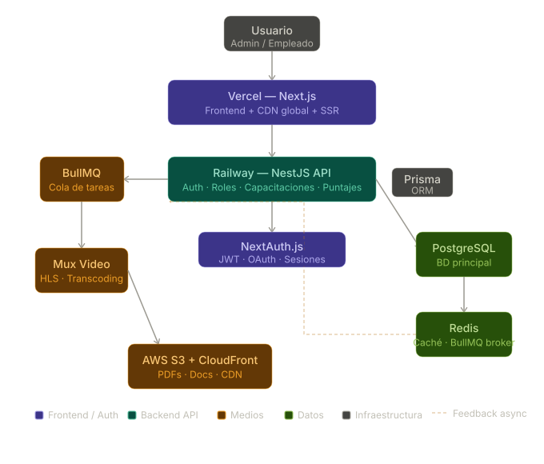

| Capa | Tecnología | Descripción |
|---|---|---|
| Frontend |
Next.js
App Router + SSR
|
Renderizado híbrido, rutas protegidas por rol y layouts compartidos entre
panel admin y empleado. Creado por Vercel, deploy trivial.
|
| Frontend |
TypeScript
Tipado estricto
|
Evita errores silenciosos en la lógica de asignación de roles y puntajes.
Obligatorio en proyectos empresariales.
|
| Frontend |
Tailwind CSS
Dark mode nativo
|
Dark mode de primera clase con clases utilitarias. La paleta azul/gris de
UpSkill se configura directamente en tailwind.config.
|
| Backend |
NestJS + Node.js
API REST modular
|
Arquitectura de módulos, guards para control de roles (Admin HR, Supervisor,
Empleado) y pipes de validación. Más robusto que Express para proyectos empresariales.
|
| Backend |
NextAuth.js
Autenticación + JWT
|
Manejo de sesiones, OAuth con Google/Microsoft (común en empresas) y JWT para
los tres roles de UpSkill sin configuración compleja.
|
| Backend |
BullMQ + Redis
Colas de tareas
|
Procesa videos en background sin bloquear la API: cuando un admin sube un
video, BullMQ encola el trabajo de transcoding y notifica al usuario al completar.
|
| Backend |
Prisma ORM
Capa de datos
|
Migraciones versionadas, queries type-safe y un schema declarativo que
documenta la BD. Indispensable con TypeScript.
|
| Medios |
Mux Video
Streaming de videos
|
API-first: sube el video, Mux lo transcodifica automáticamente a HLS
adaptativo. Incluye analytics por video (% visto, abandonos). Tier gratuito para empezar.
|
| Medios |
AWS S3 + CloudFront
Documentos y PDFs
|
S3 almacena PDFs, presentaciones y materiales. CloudFront los distribuye vía
CDN. Presigned URLs permiten subida directa desde el navegador sin pasar por el servidor.
|
| Datos |
PostgreSQL
Base de datos principal
|
Ideal para el modelo relacional de UpSkill: usuarios, roles, capacitaciones,
asignaciones y puntajes con integridad referencial garantizada.
|
| Datos |
Redis
Caché y sesiones
|
Cachea el leaderboard de puntajes (consultado por muchos usuarios
simultáneamente) y actúa como broker de mensajes para BullMQ.
|
| Deploy |
Vercel + Railway
Hosting
|
Vercel para el frontend Next.js (deploy automático desde Git, CDN global).
Railway para el backend NestJS y PostgreSQL en un solo lugar, con variables de entorno y
logs.
|